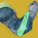
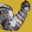

推荐者：
emm冰泰坦
 泰坦 · 3 套 · 强力S29 · 凯旋纪念碑
泰坦 · 3 套 · 强力S29 · 凯旋纪念碑
新手开荒
适用环境
合集介绍
适用于日常先锋、竞技场等无输出DPS需求、怪物（尾王浮空较少）的副本
合成手冰泰坦（新手）
 泰坦 · 冰影
泰坦 · 冰影
适用于日常先锋、竞技场等无输出DPS需求、怪物（尾王浮空较少）的副本
# 合成手冰泰坦（新手） 推荐人：emm 描述：适用于日常先锋、竞技场等无输出DPS需求、怪物（尾王浮空较少）的副本 更新：2026.9.10 场景：日常 分支：冰影 强度：强力 核心：合成感受器 ## 职业 职业：泰坦#row:elements/class-abilities/分节/泰坦 超能：冰川震击#2021620139 星相：构造收割#2031919264、风暴怒吼#1563930741 碎片：传导之吟#2483898429、裂隙之吟#3469412971、韵律之吟#2483898430、饥饿之吟#2483898431 手雷：冰川手雷#1399217 近战：战栗打击#2028772231 职业技能：巍峨屏障#489583096 ## 武器 异域武器：堡垒#2415517654 传说武器：巴西游走蛛#3496887154 | 滑行射击#3161816588、雪上加霜#2679249093 传说武器：翻新 A499#593808239 | 直击要害#1365187766、自动填装枪套#3300816228 ## 护甲 异域护甲：合成感受器#2002759681 套装：涅索斯#set:3120219904 2 件 × 涅索斯#set:3120219904 4 件 头盔：拳到力来#3938489430、拳到力来#3938489430、超能洗礼#1130820873 护臂：近战快速启动#1763780622、伤害感应#377010989、手雷洗礼#1781551382 胸甲：完全充能#2577472338、震荡阻尼器#3719981603、灼烧抗性#3194530172 腿部：层层不绝#3994043492、元素充能#3712696020、动能回收器#1097608874 职业物品：特殊终结技#4004774872、职业洗礼#1193713026、感应护盾#4081595582 ## 神器 神器：杀手公爵药剂师背包 模组：晶体转换器#4037132131、大肆屠杀#4037132130、治疗能量球#611645146、迎接风暴#611645150、冰霜复兴#611645149、冰冷伺候#3117519995、寒脑凝滞#3117519998 ## 六维 六维：生命 ~ ｜ 近战 100 ｜ 手雷 70+ ｜ 超能 180+ ｜ 职业 ~ ｜ 武器 ~
职业
武器
神器模组
护甲
- 生命~
- 近战100
- 手雷70+
- 超能180+
- 职业~
- 武器~
合成手冰泰坦（进阶）
 泰坦 · 冰影
泰坦 · 冰影
适用于日常先锋、竞技场等无输出DPS需求、怪物（尾王浮空较少）的副本
# 合成手冰泰坦（进阶） 推荐人：emm 描述：适用于日常先锋、竞技场等无输出DPS需求、怪物（尾王浮空较少）的副本 更新：2026.9.10 场景：日常 分支：冰影 强度：强力 核心：合成感受器 ## 职业 职业：泰坦#row:elements/class-abilities/分节/泰坦 超能：冰川震击#2021620139 星相：构造收割#2031919264、风暴怒吼#1563930741 碎片：传导之吟#2483898429、裂隙之吟#3469412971、破碎之吟#3469412975、韵律之吟#2483898430 手雷：冰川手雷#1399217 近战：战栗打击#2028772231 职业技能：巍峨屏障#489583096 ## 武器 异域武器：堡垒#2415517654 传说武器：巴西游走蛛#3496887154 | 滑行射击#3161816588、雪上加霜#2679249093 传说武器：翻新 A499#593808239 | 直击要害#1365187766、自动填装枪套#3300816228 ## 护甲 异域护甲：合成感受器#2002759681 套装：渴望回响#set:1507061013 2 件 × 渴望回响#set:1507061013 4 件 头盔：超能洗礼#1130820873、拳到力来#3938489430、拳到力来#3938489430 护臂：伤害感应#377010989、手雷洗礼#1781551382 胸甲：完全充能#2577472338、震荡阻尼器#3719981603、灼烧抗性#3194530172 腿部：层层不绝#3994043492、元素充能#3712696020、动能回收器#1097608874 职业物品：特殊终结技#4004774872、感应护盾#4081595582 ## 神器 神器：杀手公爵药剂师背包 模组：大肆屠杀#4037132130、晶体转换器#4037132131、治疗能量球#611645146、冰霜复兴#611645149、迎接风暴#611645150、寒脑凝滞#3117519998、冰冷伺候#3117519995 ## 六维 六维：生命 ~ ｜ 近战 100 ｜ 手雷 70+ ｜ 超能 180+ ｜ 职业 ~ ｜ 武器 ~ ## 注解 金枪可换为破冰者，三号位带急切刀
职业
武器
神器模组
护甲
- 生命~
- 近战100
- 手雷70+
- 超能180+
- 职业~
- 武器~
注解
金枪可换为破冰者，三号位带急切刀
冰瀑手冰泰坦
 泰坦 · 冰影
泰坦 · 冰影
队伍需求大量弹药的场景，以及日常使用
# 冰瀑手冰泰坦 推荐人：emm 描述：队伍需求大量弹药的场景，以及日常使用 更新：2026.9.10 场景：日常 分支：冰影 强度：强力 核心：冰瀑衣钵 ## 职业 职业：泰坦#row:elements/class-abilities/分节/泰坦 超能：冰川震击#2021620139 星相：风暴怒吼#1563930741、构造收割#2031919264 碎片：传导之吟#2483898429、饥饿之吟#2483898431、韵律之吟#2483898430、裂隙之吟#3469412971 手雷：冰川手雷#1399217 近战：战栗打击#2028772231 职业技能：巍峨屏障#489583096 ## 武器 异域武器：混乱无序#2376481550 传说武器：裁决定论#694500607 | 聚合充能#3764420437、战嚎炮管#2360754333 ## 护甲 异域护甲：冰瀑衣钵#1734674241 套装：虚无赛博毒蛇#set:1790308978 2 件 × 虚无赛博毒蛇#set:1790308978 4 件 头盔：弹药搜寻者#4294967296、特殊武器弹药搜寻者#2595839237、特殊弹药斥候#25154119 护臂：伤害感应#377010989、手雷洗礼#1781551382、近战快速启动#1763780622 胸甲：完全充能#2577472338、震荡阻尼器#3719981603、烈日弹药生成#2526773280 腿部：层层不绝#3994043492、元素充能#3712696020、电弧回收器#534479613 职业物品：特殊终结技#4004774872、感应护盾#4081595582、职业洗礼#1193713026 ## 神器 神器：杀手公爵药剂师背包 模组：风寒#4037132128、晶体转换器#4037132131、削弱清敌#611645144、迎接风暴#611645150、治疗能量球#611645146、动能冲击#3117519994、冰冷伺候#3117519995 ## 六维 六维：生命 ~ ｜ 近战 100 ｜ 手雷 ~ ｜ 超能 ~ ｜ 职业 70+ ｜ 武器 180+ ## 注解 本套实际上就是通过冰泰坦提供高额减伤并配合智谋4与冰柱联动提供充足弹药经济。本套神器与武器选择并无定论，选择冰瀑手最大原因是为了控场，减伤快速启动和冰瀑手能够脱离神器取得软减的能力。在上述的推荐武器和神器之外，可以通过灼烧暗影+狼王/狼毒等烈日优质武器达到对勇士的快速处理，或者通过杀手之牙配合邪恶收割达到频繁虚空盾的效果。本套最大的意义实际上是冰泰坦与智谋4的联动，可以为队友产出大量绿蛋，可以适用于多种场景。
职业
武器
神器模组
护甲
- 生命~
- 近战100
- 手雷~
- 超能~
- 职业70+
- 武器180+
注解
本套实际上就是通过冰泰坦提供高额减伤并配合智谋4与冰柱联动提供充足弹药经济。本套神器与武器选择并无定论，选择冰瀑手最大原因是为了控场，减伤快速启动和冰瀑手能够脱离神器取得软减的能力。在上述的推荐武器和神器之外，可以通过灼烧暗影+狼王/狼毒等烈日优质武器达到对勇士的快速处理，或者通过杀手之牙配合邪恶收割达到频繁虚空盾的效果。本套最大的意义实际上是冰泰坦与智谋4的联动，可以为队友产出大量绿蛋，可以适用于多种场景。